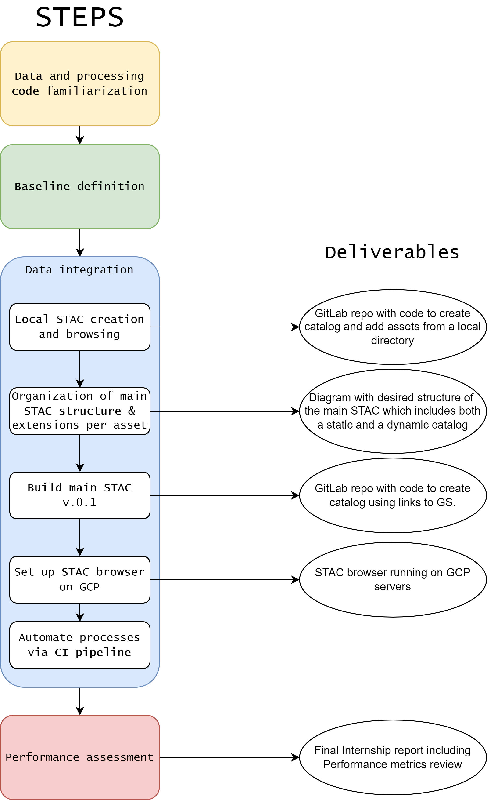
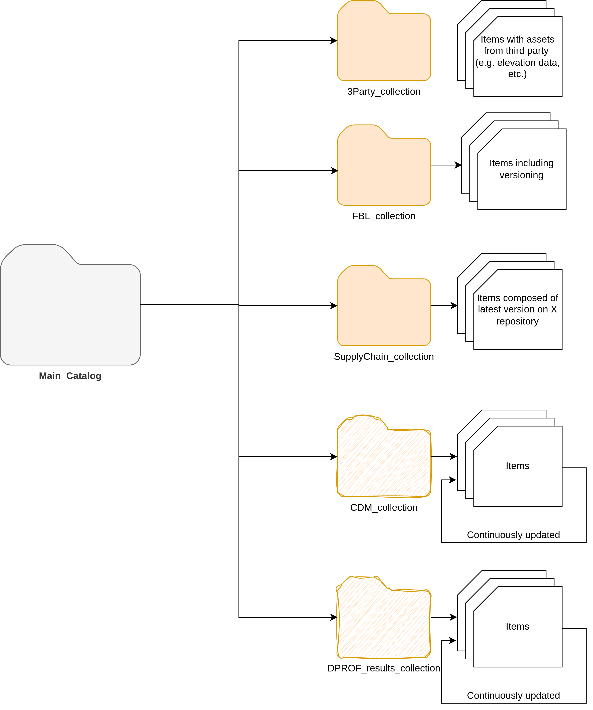
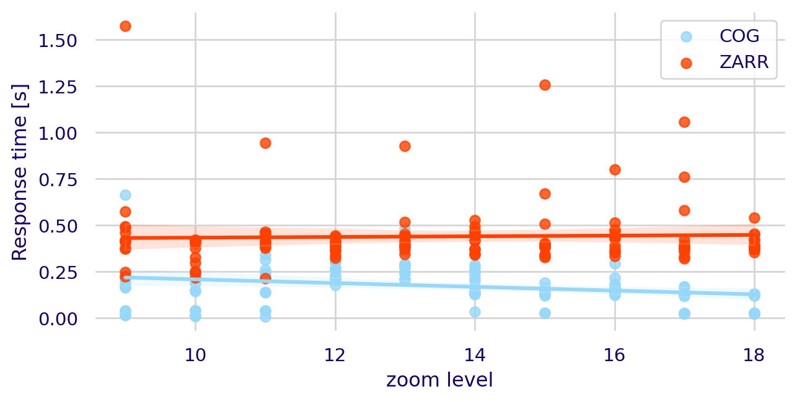

import pandas as pd
data = pd.read_csv('https://raw.githubusercontent.com/mdominguezd/s11_cats_report.github.io/main/sections/request_time_results_10iter.csv')
speed_up = round(data['ZARR'].mean()/data['COG'].mean(), 2)Cataloguing and visualizing big Geodata
Final report
Introduction
Internship organization background
Satelligence is a company founded in 2016 that specializes in providing satellite-based actionable information by monitoring environmental risks in commodity supply chains and financial investment planning (Satelligence, n.d.). More specifically, the company processes terabytes of satellite imagery to detect environmental risks and presents this information to their clients in a web application to assist them in the migration towards more sustainable sourcing models and the compliance with deforestation-free regulations, such as the EUDR (Satelligence, 2023).
Context and justification of research
Satelligence currently employs cloud computing, specifically Kubernetes, to process extensive volumes of satellite imagery amounting to terabytes. While this processing workflow currently runs smoothly, the company’s data team faces challenges when going deeper into the analysis and accessing intermediate results due to the big nature of this data (Satelligence, 2023). Scholars have defined big data as datasets characterized by their high Volume, Velocity, and Variety, which makes it paramount to use advanced processing and analytics techniques to derive relevant insights (Giri and Lone, 2014). In the specific case of Satelligence, their datasets can be categorized as big data due to their: High volume (Terabytes of satellite images processed every day), high velocity (Near – real time processing of these images) and high variety (Imagery coming from different sensors and regions). All these datasets are a specific case of big data: Big Geodata.
Significance of the topic
In the past decades there has been a rapid increase in the amount and size of geospatial information that can be accessed. Nowadays, more than 150 satellites orbit the earth collecting thousands of images every single day (Zhao et al., 2021). This has made data handling and the introduction of spatial data infrastructures (SDIs) paramount when working with such big datasets.
Traditionally, SDIs have served to ease the accessibility, integration and analysis of spatial data (Rajabifard and Williamson, 2001). However, in practice SDIs have been built upon technologies that focus on data preservation rather than accessibility (Durbha et al., 2023). Due to this, an important shift is underway towards more cloud-based SDIs. These platforms need the emergence of new technologies that prioritize seamless access to cloud-stored data, efficient discovery services that ensure the easy location of extensive spatial data, and data visualization interfaces where multiple datasets can be depicted.
Cloud-based data storage
Spatial data, just like any other type of data, can be catalogued into structured and unstructured data. Structured datasets are often organized and follow a specific structure (i.e. A traditional table with rows (objects) and columns (features)). On the other hand, unstructured data does not have a predefined structure (e.g. Satellite imagery and Time series data) (Mishra and Misra, 2017). The management of structured data has witnessed substantial advancements, making it straightforward to handle it systematically using, for instance, relational databases (i.e. With the help of Structured Query Language (SQL)) (Kaufmann and Meier, 2023). In contrast, due to the additional challenges associated with the handling of unstructured data, the developments in this area have taken a longer time to appear.
The emergence of cloud-based archives has been one of the main advancements for unstructured data management during the last decades. In the specific case of geo-spatial data, it has allowed to store terabytes of unstructured data (i.e. Satellite imagery) on the cloud and access it through the network. However, the necessity transmitting data across networks to access it makes it essential to develop new data formats suited for such purposes (Durbha et al., 2023).
Cloud-Optimized GeoTIFFs (COGs) are an example of data formats that have been created to ease the access of data stored in the cloud. They improve the readability by including the metadata in the initial bytes of the file stored and storing different image tiles for different scales. These characteristics make COGs heavier than traditional image formats, however, they also greatly enhance accessibility by enabling the selective transfer of only the necessary tiles (Durbha et al., 2023).
Another cloud native data format that has gained popularity recently is Zarr. This data format and python library focuses on the cloud-optimization of n-dimensional arrays. Zarr differently than COGs store the metadata separately from the data chunks. Normally, using external JSON files (Durbha et al., 2023).
Data discovery services
A discovery service widely used for the exploration of big geodata (e.g. COGs) is Spatio-Temporal Asset Catalog (STAC). Through the standardization of spatial data, STAC simplifies the management and discovery of big geodata (Brodeur et al., 2019). This service works by organizing the data into catalogs, collections, items, and assets that will only be read when a computation is required (Durbha et al., 2023). This feature optimizes workflows by reducing unnecessary data loading.
STAC fundamentals
A Catalog built under STAC specifications is composed by:
| STAC components | Description |
|---|---|
| Assets | An asset can be any type of data with a spatial and a temporal component. |
| Items | An item is a GeoJSON feature with some specifications like: Time, Link to the asset (e.g. Google bucket) |
| Collections | Defines a set of common fields to describe a group of Items that share properties and metadata |
| Catalogs | Contains a list of STAC collections, items or can also contain child catalogs. |
Visualization interfaces
The visualization of spatial data brings with it a series of challenges due to its big nature. Dynamic tiling libraries such as TiTiler have tackled multiple of these challenges by dynamically generating PNG/JPEG image tiles only when requested without reading the entire source file into memory (TiTiler, n.d.). This feature optimizes rendering of images since PNG and JPEG image file formats are more easily transferred through the web.
Added value of this research
This research aims to develop a STAC catalog to facilitate the discovery of diverse big geospatial datasets created by different teams within the company. Depending on the time available for the thesis, data visualization functionalities may be integrated. Moreover, the research will explore tools to efficiently manage a STAC catalog containing both static and dynamic datasets.
Research questions
- What are the current challenges, practices, and user experiences related to data discovery and data visualization in the company?
- How does the integration of cloud-optimized data formats, cloud services and SpatioTemporal Asset Catalog (STAC) specifications influence the process and experiences of discovering big spatial data?
- To what extent do dynamic tiling services can perform in visualizing different cloud-optimized data formats?
Methodology
To address the proposed research questions, a series of activities and the deliverables expected from them are presented on Figure 1. Additionally, a detailed description of each activity is presented in the following subsections.

Data and processing code familiarization
In this step, I will familiarize myself with the current tools used for the processing of the images and its storage. This step will include the understanding of cloud services and internal image processing tools and the main datasets to be referenced on the catalog (STAC data). Moreover, in this step an initial description of the STAC data metadata will be performed.
Cloud services familiarization
An overview of the cloud services used by the company will be described. This will be mainly with the objective to understand, but not limited to:
Who access the data?
What are the costs of accessing it?
How often certain data is updated?
How is the data updated?
Baseline scenario definition
The baseline scenario was defined as the set of methods currently being used by members of different teams at Satelligence to find, retrieve and visualize spatial data. This baseline scenario was evaluated qualitatively by interviewing four members of two different teams in the company (i.e. The data and the operations team). To keep a balance regarding experience of the study subjects, both the newest member of each team and a member with at least three years in the company were interviewed.
The questions asked during the interviews were oriented towards two main topics that were covered during this internship: Spatial data discovery and spatial data visualization. For both topics, the questions were divided into questions related to raster and vector datasets. The questions included in the interview can be found in appendix ### and were meant to be open questions with multiple possible answers.
Data integration
Local STAC creation and browsing
This step will mainly be focused on the set up of the developing environment to both create a local STAC catalog and browse through it. This will include:
- Creation of a virtual environment or Docker container with all the required packages to create a STAC catalog.
- Creation of Local STAC using sample data from the company.
- Browse through the STAC catalog using tools like STAC browser.
The deliverable of this step will be a GitLab repository with code to create a catalog, add assets from a local directory and browse through them locally using STAC browser.
Organization of main STAC structure & extensions per asset
In this step the structure of the STAC catalog will be defined. This will involve the selection of datasets that will be referenced on the catalog, the definition of subcatalogs and/or collections to group items with similar metadata. An initial idea of the structure of the main STAC catalog can be seen on Figure 2. Initially, the creation of two different subcatalogs is proposed to keep the static and dynamic dataset separated. Moreover, the selection of the STAC extensions1 used for each dataset will be defined in this step.

Build main STAC v.0.1
This step will focus on the building of the initial version of the main STAC catalog, once the datasets and the overall structure has been defined. It will involve the population of the catalog with STAC components following the defined structure on Section 2.3.2. Furthermote, on this step a series of validation tools will be used to check that the STAC catalog created is followins the STAC spcification. These tools are part of the python package stac-tools.
The deliverable of this step will be a GitLab repository with code to create a catalog, create collections, add assets from a directory on the cloud and update them.
Set up STAC browser on GCP
In this step a version of the STAC Browser application will be deployed using the tools from Google Cloud Platform (GCP). This application will allow users to browse and interact with the STAC catalog through a user-friendly interface. Additionally, this step will involve the definition of resources and tools from GCP that will be employed to deploy the application. For instance, the decision of doing it through a virtual machine or on a containerized way will be made.
The deliverable of this step will be a the STAC browser application running on GCP.
Automate processes via CI pipeline
Finally, the code to create, modify and/or deploy the STAC catalog will be merged into a continuous integration pipeline that will allow the integration of this catalog with other tools from the company. For instance, the Distributed Processing Framework (DPROF), which is satelligence’s Satellite Data Processing engine.
Performance assessment
The assessment of the performance of the new Data Catalog will be measured using the baseline scenario established at the beginning of the internship and the Speed Up metric proposed by (Durbha et al., 2023):
\[ SpeedUp = \frac{t_{baseline}}{t_{catalog}} \]
This metric explains how much the process to access data has sped up thanks to the integration of cloud-based storage, the data catalog and the browsing interface.
Results
Baseline scenario
Main findings
The main finding of the interviews were the steps followed currently to discover, retrieve and visualize data. These steps are summarized on Figure 3 and show how complex and time consuming the process of discovering and visualizing spatial data can be for a Satelligence employee nowadays. Moreover, the steps followed were categorized in four classes depending on how much time is generally spent carrying out.

The major pitfalls found on the process of data discovery in the company could be summarized in ….
Service integration
Explain here how eoAPI uses multiple services, how each of them helps S11 in their data discovery and vizz tasks, and how did I manage to deploy it
Kubernetes
STAC-API, pgSTAC, TiTiler
Data discovery improvement
Flowchart with STAC
Performance of multi-format data visualization
TiTiler-PgSTAC & TiTiler-xarray
Raster formats
The comparison of visualization speeds with TiTiler-xarray for Zarr datasets and TiTiler-PgSTAC for COGs are presented on Figure 4. In the figure it can be obesrved that COG tiles are requested np.float64(2.85) times faster than the same file in ZARR format.

Effects of zoom level
As seen on ?@fig-fig-comp-zoom, the zoom level of the map will have an effect on the time spent requesting and getting a tile from a tile server. In this study, it was found that the request times decreased by a factor of np.float64(-0.012) and np.float64(-0.015) per zoom level for COGs and ZARRs respectively.

Discussion
hgdcjfc rah fdxh sdfhfn dfayhgn d
gadfh
Future work
Internship planning
Internship duration: 08/04/2024 - 08/08/2024 (4 months)
References
Brodeur, J., Coetzee, S., Danko, D., Garcia, S. and Hjelmager, J. (2019). Geographic Information Metadata—An Outlook from the International Standardization Perspective. ISPRS International Journal of Geo-Information, 8(6), 280. p. https://doi.org/10.3390/ijgi8060280
Durbha, S. S., Sanyal, J., Yang, L., S Chaudhari, S., Bhangale, U., Bharambe, U. and Kurte, K. (2023). Advances in Scalable and Intelligent Geospatial Analytics: Challenges and Applications (1st ed.). CRC Press. https://doi.org/10.1201/9781003270928
Giri, K. and Lone, T. (2014). Big Data -Overview and Challenges. International Journal of Advanced Research in Computer Science and Software Engineering, 4.
Kaufmann, M. and Meier, A. (2023). Database Management. In M. Kaufmann and A. Meier (Eds.), SQL and NoSQL Databases: Modeling, Languages, Security and Architectures for Big Data Management (1–24. pp.). Springer Nature Switzerland. https://doi.org/10.1007/978-3-031-27908-9_1
Mishra, S. and Misra, A. (2017). Structured and Unstructured Big Data Analytics. 2017 International Conference on Current Trends in Computer, Electrical, Electronics and Communication (CTCEEC), 740–746. pp. https://doi.org/10.1109/CTCEEC.2017.8454999
Rajabifard, A. and Williamson, I. P. (2001). Spatial data infrastructures: Concept, SDI hierarchy and future directions. http://hdl.handle.net/11343/33897
Satelligence. (n.d.). Home - Satelligence - Sustainability monitoring simplified. In Satelligence. Retrieved February 5, 2024, from https://satelligence.com/
Satelligence. (2023). Internship: Cataloguing and visualizing big geodata.
Zhao, Y., Yang, X. and Vatsavai, R. R. (2021). A Scalable System for Searching Large-scale Multi-sensor Remote Sensing Image Collections. 2021 IEEE International Conference on Big Data (Big Data), 3780–3783. pp. https://doi.org/10.1109/BigData52589.2021.9671679
Appendix
Code to evaluate request times
import pandas as pd
import requests
import random
tiles = ["9/399/254", "10/800/505", "11/1603/1012", "12/3209/2042",
"13/6407/4075", "14/12817/8159", "15/25678/16271", "16/51268/32552",
"17/102503/65134", "18/205062/130211"]
# Tiles are slightly modified to try to avoid getting cached tiles
def modify_tile(tile):
parts = tile.split('/')
z = int(parts[0])
x = int(parts[1])
y = int(parts[2])
# Determine the range of change based on the value of z
if z <= 9:
change_range = 2
elif z <= 12:
change_range = 5
elif z <= 15:
change_range = 10
elif z <= 18:
change_range = 50
# Apply the change to x and y
x_change = random.randint(-change_range, change_range)
y_change = random.randint(-change_range, change_range)
new_x = x + x_change
new_y = y + y_change
# Return the modified tile as a string
return f"{z}/{new_x}/{new_y}"
times_zarr = []
times_cog = []
z_level = []
cmap_picked = []
# The colormaps picked can be either a customized one for S11 Forest baseline or greens_r
cmap = ["=[[[1.0,1.1],[0,47,0,255]],[[2.0,2.1],[55,76,33,255]],[[3.0,3.1],[105,140,60,255]],[[4.0,4.1],[178,199,140,255]],[[5.0,5.1],[164,198,121,255]],[[6.0,6.1],[198,112,85,255]],[[7.0,7.1],[170,219,167,255]],[[8.0,8.1],[87,162,164,255]],[[50.0,50.1],[255,183,1,255]],[[52.0,52.1],[238,223,201,255]],[[53.0,53.1],[185,120,119,255]],[[54.0,54.1],[218,170,241,255]],[[55.0,55.1],[40,205,167,255]],[[60.0,60.1],[208,227,243,255]],[[66.0,66.1],[166,219,204,255]],[[70.0,70.1],[255,255,255,255]],[[71.0,71.1],[185,136,94,255]],[[72.0,72.1],[125,165,142,255]],[[74.0,74.1],[188,85,123,255]],[[90.0,90.1],[241,195,132,255]]]","_name=greens_r&rescale=0,70"]
for i in range(2):
mod_tiles = [modify_tile(tile) for tile in tiles]
k = int(i/2-i//2 + 0.5)
for tile in mod_tiles:
url_zarr = f"http://localhost:8084/tiles/WebMercatorQuad/{tile}%401x?url=gs://s11-tiles/zarr/separate&variable=band_data&reference=false&decode_times=true&consolidated=true&colormap{cmap[k]}&return_mask=true"
url_cog = f"http://localhost:8082/collections/Example%20FBL%20Riau/items/FBL_V5_2021_Riau_cog/tiles/WebMercatorQuad/{tile}%401x?bidx=1&assets=data&unscale=false&resampling=nearest&reproject=nearest&colormap{cmap[k]}&return_mask=true"
x = requests.get(url_zarr)
times_zarr.append(x.elapsed.total_seconds())
x = requests.get(url_cog)
times_cog.append(x.elapsed.total_seconds())
z_level.append(int(tile.split('/')[0]))
cmap_picked.append(k)
data = pd.DataFrame([cmap_picked, z_level, times_cog, times_zarr]).T
data.columns = ['colormap','zoom level','COG', 'ZARR']
data.to_csv('request_time_results_1iter.csv')Footnotes
STAC extensions are additional metadata properties that can be added to a dataset. (e.g. Classes, bands, sensor-type, etc.)↩︎